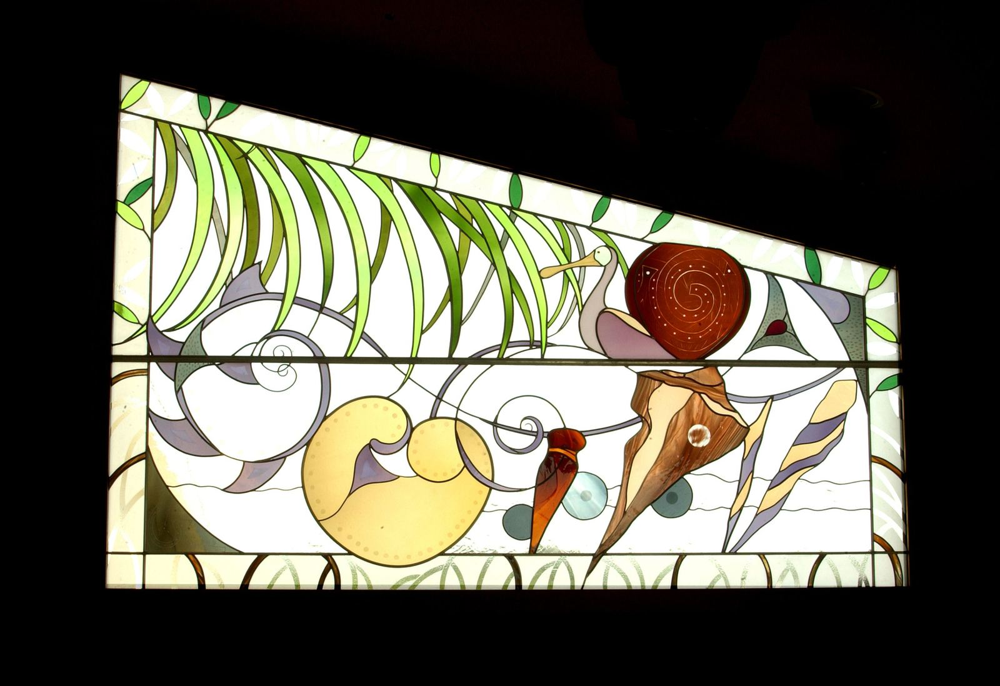
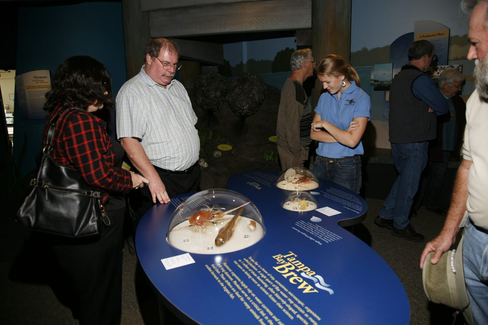
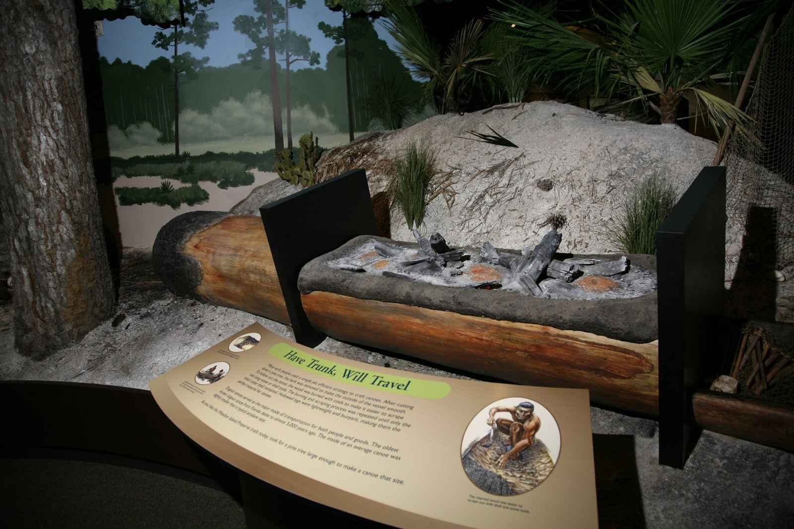
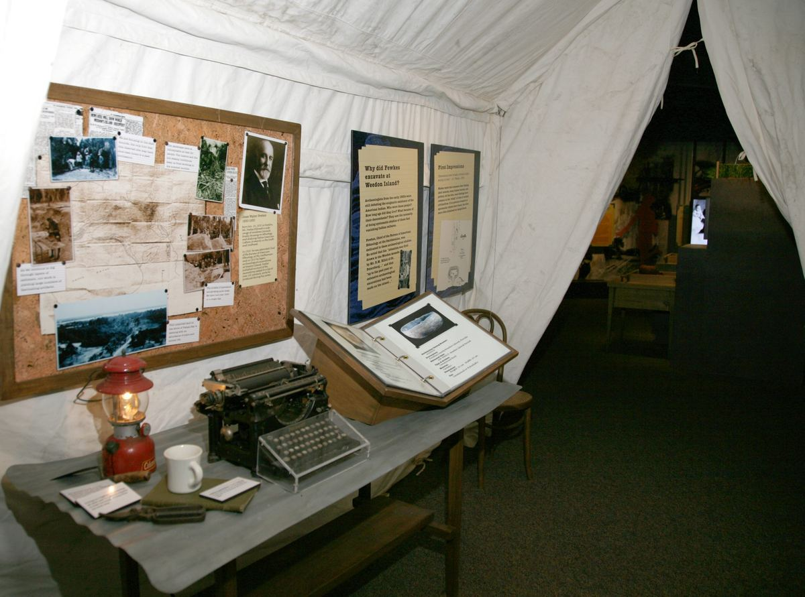

Take the plunge
A fish-eye view of Tampa Bay. Find out how many microscopic organisms live in its water, and meet the animals that share the preserve.

Home / The Center
Deep in the preserve, the Center is dedicated to reconnecting people with the environment through hikes, workshops, exhibits and programs.
The three-story Center was designed with the help of Native Americans and follows their traditions.
It sits on the cardinal points of the compass, north, south, east and west, with its entrance facing east. Inside you'll find the exhibit gallery, programs and classes, a resource center and a gift shop with cultural and natural history items.

6,000 square feet of interactive exhibits for all ages. Travel underwater, through mangrove swamps and back in time, and listen closely: hidden worlds are all around you.
A fish-eye view of Tampa Bay. Find out how many microscopic organisms live in its water, and meet the animals that share the preserve.
Before stores and pharmacies, the land provided everything. See real artifacts from the Yat Kitischee site, a small hamlet on Old Tampa Bay during the Manasota culture period.
Archaeologists read shell, pottery, stone and bone to piece together how people lived. Try reconstructing pottery at the archaeological dig.
Since the late 1800s the island has hosted film studios, an airport and speakeasies. Early developers even tried to trick scientists into studying its archaeology.
See how research, education and restoration at the preserve are revealing how the natural world works, and what you can bring home to your backyard.
The preserve is part of the Tampa Bay watershed. Learn simple ways to keep the bay cleaner and more productive.





The prehistoric dugout canoe excavated from the preserve's shoreline is now on view in the Welcome Center.
Read the canoe's story"To empower citizens to make informed decisions about natural and cultural resources."
The Center's mission
Center programs interpret the natural, cultural and archaeological history of the preserve to show how the environment and people support and shape each other.
Watch the preserve's films, lectures and event recordings on the Weedon Island YouTube channel, starting with Gulf Islanders: The Story of Weedon Island.
See classes and events